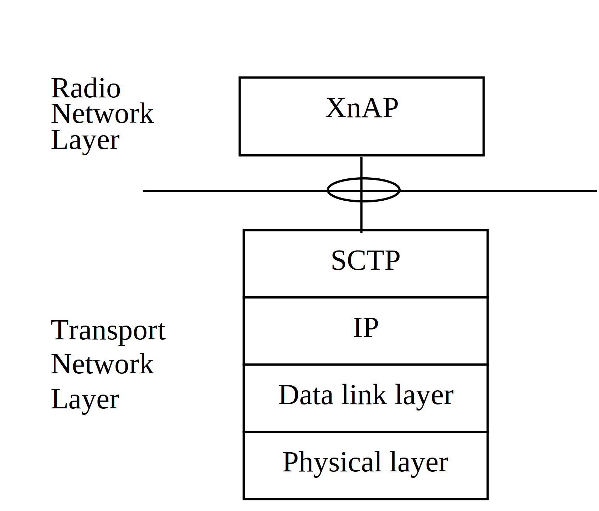

3GPP TS 38.422 V17.1.0 (2023-06)
Technical Specification
3rd Generation Partnership Project;
Technical Specification Group Radio Access Network;
NG-RAN;
Xn signalling transport
(Release 17)
The present document has been developed within the 3rd
Generation Partnership Project (3GPP TM) and may be further
elaborated for the purposes of 3GPP..
The present document has not been subject to any approval process by the
3GPP Organizational Partners and shall not be implemented.
This Specification is provided for future development work within 3GPP
only. The Organizational Partners accept no liability for any use of
this Specification.
Specifications and Reports for implementation of the 3GPP TM
system should be obtained via the 3GPP Organizational Partners'
Publications Offices.
3GPP
Postal address
3GPP support office address
650 Route des Lucioles - Sophia Antipolis
Valbonne - FRANCE
Tel.: +33 4 92 94 42 00 Fax: +33 4 93 65 47 16
Internet
http://www.3gpp.org
Copyright Notification
No part may be reproduced except as authorized by written
permission.
The copyright and the foregoing restriction extend to reproduction in
all media.
© 2023, 3GPP Organizational Partners (ARIB, ATIS, CCSA, ETSI, TSDSI, TTA, TTC).
All rights reserved.
UMTS™ is a Trade Mark of ETSI registered for the benefit of its members
3GPP™ is a Trade Mark of ETSI registered for the benefit of its
Members and of the 3GPP Organizational Partners
LTE™ is a Trade Mark of ETSI registered for the benefit of its Members
and of the 3GPP Organizational Partners
GSM® and the GSM logo are registered and owned by the GSM Association
Foreword 4
1 Scope 5
2 References 5
3 Definitions and abbreviations 5
3.1 Definitions 5
3.2 Abbreviations 6
4 Xn signalling bearer 6
4.1 Functions and protocol stack 6
5 Data link layer 6
6 IP layer 6
7 Transport layer 7
Annex A (informative): Change history 8
This Technical Specification has been produced by the 3rd Generation Partnership Project (3GPP).
The contents of the present document are subject to continuing work within the TSG and may change following formal TSG approval. Should the TSG modify the contents of the present document, it will be re-released by the TSG with an identifying change of release date and an increase in version number as follows:
Version x.y.z
where:
x the first digit:
1 presented to TSG for information;
2 presented to TSG for approval;
3 or greater indicates TSG approved document under change control.
y the second digit is incremented for all changes of substance, i.e. technical enhancements, corrections, updates, etc.
z the third digit is incremented when editorial only changes have been incorporated in the document.
The present document specifies the standards for signalling transport to be used across Xn interface. The Xn interface provides means for interconnecting two NG-RAN nodes. The Xn interface is a logical interface between two nodes of the NG-RAN. The present document describes how the XnAP signalling messages are transported over Xn.
The following documents contain provisions which, through reference in this text, constitute provisions of the present document.
- References are either specific (identified by date of publication, edition number, version number, etc.) or non‑specific.
- For a specific reference, subsequent revisions do not apply.
- For a non-specific reference, the latest version applies. In the case of a reference to a 3GPP document (including a GSM document), a non-specific reference implicitly refers to the latest version of that document in the same Release as the present document.
[1] 3GPP TR 21.905: "Vocabulary for 3GPP Specifications".
[2] IETF RFC 4960: "Stream Control Transmission Protocol".
[3] 3GPP TS 38.300: "NR; Overall Description; Stage 2".
[4] IETF RFC 8200 (2017-07): "Internet Protocol, Version 6 (IPv6) Specification".
[5] IETF RFC 791 (1981-09): "Internet Protocol".
[6] IETF RFC 2474 (1998-12): "Definition of the Differentiated Services Field (DS Field) in the IPv4 and IPv6 Headers".
[7] IETF RFC 6083 (2011-01): "Datagram Transport Layer Security (DTLS) for Stream Control Transmission Protocol (SCTP)".
[8] IETF RFC 6335 (2011-08): "Internet Assigned Numbers Authority (IANA) Procedures for the Management of the Service Name and Transport Protocol Port Number Registry".
For the purposes of the present document, the terms and definitions given in 3GPP TR 21.905 [1] and the following apply. A term defined in the present document takes precedence over the definition of the same term, if any, in 3GPP TR 21.905 [1].
NG-RAN node: as defined in TS 38.300 [3]
Xn: interface between two NG-RAN nodes, providing an interconnection point between the NG-RAN nodes.
Xn-C: Reference point for the control plane protocol between NG-RAN nodes.
For the purposes of the present document, the abbreviations given in 3GPP TR 21.905 [1] and the following apply. An abbreviation defined in the present document takes precedence over the definition of the same abbreviation, if any, in 3GPP TR 21.905 [1].
IP Internet Protocol
SCTP Stream Control Transmission Protocol
DiffServ Differentiated Service
PPP Point to Point Protocol
IANA Internet Assigned Number Authority
Xn-C signalling bearer provides the following functions:
- Provision of reliable transfer of XnAP message over Xn-C interface.
- Provision of networking and routeing function.
- Provision of redundancy in the signalling network.
- Support for flow control and congestion control.
The protocol stack for Xn-C Signalling Bearer is shown in figure 4.1-1 and details on each protocol are described in the following clauses.

Figure 4.1-1: Xn-C signalling bearer protocol stack
The Transport Network Layer is based on IP transport, comprising SCTP on top of IP.
The support of any suitable Data Link Layer protocol, e.g. PPP, Ethernet, etc., shall not be prevented.
The NG-RAN node shall support IPv6 (IETF RFC 8200 [4]) and/or IPv4 (IETF RFC 791 [5]).
The IP layer of Xn-C only supports point-to-point transmission for delivering XnAP message.
The NG-RAN node shall support the Diffserv Code Point marking as described in IETF RFC 2474 [6].
SCTP (IETF RFC 4960 [2]) shall be supported as the transport layer of Xn-C signalling bearer. The Payload Protocol Identifier (ppid) assigned by IANA to be used by SCTP for the application layer protocol XnAP is 61, and 67 for DTLS over SCTP (IETF RFC 6083 [7]). The byte order of the ppid shall be big-endian.
SCTP refers to the Stream Control Transmission Protocol developed by the Sigtran working group of the IETF for the purpose of transporting various signalling protocols over IP network.
An NG RAN node shall support a configuration with a single SCTP association per NG RAN node pair. Configurations with multiple SCTP endpoints per the NG RAN node pair should be supported. When configurations with multiple SCTP associations are supported, the NG RAN node may request to dynamically add/remove SCTP associations between the NG RAN node pair. Within the set of SCTP associations established between one NG RAN node pair, a single SCTP association shall be employed for XnAP elementary procedures that utilize non-UE-associated signalling with the possibility of fail-over to a new association to enable robustness. The SCTP Destination Port number value assigned by IANA to be used for XnAP is 38422. When a NG-RAN node requests to dynamically add additional SCTP associations between the NG RAN node pair, the SCTP Destination Port number value may be 38422, or any dynamic port value (IETF RFC 6335 [8]). The NG RAN node configuration update procedure shall be the first XnAP procedure triggered on an additional TNLA of an already setup Xn-C interface instance after the TNL association has become operational, and the peer NG RAN node shall associate the TNLA to the Xn-C interface instance using the included Global NG-RAN Node ID.
Between one pair of two NG-RAN nodes:
- a single pair of stream identifiers shall be reserved over an SCTP association for the sole use of XnAP elementary procedures that utilize non UE-associated signalling.
- At least one pair of stream identifiers over one or several SCTP associations shall be reserved for the sole use of XnAP elementary procedures that utilize UE-associated signallings. However, a few pairs (i.e. more than one) should be reserved.
- For a single UE-associated signalling, the NG RAN nodes shall use one SCTP association and one SCTP stream and the SCTP association/stream should not be changed during the communication of the UE-associated signalling unless current SCTP association is failed or removed, or TNL binding update is performed.
Transport network redundancy may be achieved by SCTP multi-homing between two end-points, of which one or both is assigned with multiple IP addresses. SCTP end-points shall support a multi-homed remote SCTP end-point. For SCTP endpoint redundancy an INIT may be sent from one NG-RAN node, at any time for an already established SCTP association, which shall be handled as defined in IETF RFC 4960 [2] in sub clause 5.2.
The SCTP congestion control may, using an implementation specific mechanism, initiate higher layer protocols to reduce the signalling traffic at the source and prioritise certain messages.
Annex A (informative):
Change history
| Change history | |||||||
| Date | Meeting | TDoc | CR | Rev | Cat | Subject/Comment | New version |
| 2018-01 | RAN3-AH-1801 | R3-180544 | Reflected agreed TP in RAN3-AH-1801 in 2018-01 (Sophia Antipolis) | 0.2.0 | |||
| 2018-05 | RAN3#100 | R3-183596 | Reflected agreed TP in RAN3#100 in 2018-05 (Busan) and made some editorial corrections | 0.3.0 | |||
| 2018-06 | RAN#80 | RP-180682 | Submitted to RAN plenary for Approval | 1.0.0 | |||
| 2018-06 | RAN#80 | RP-181276 | Typos corrected ("NGAP" corrected to "XnAP" in two places) | 1.0.1 | |||
| 2018-06 | RAN#80 | - | - | - | Specification approved at TSG-RAN and placed under change control | 15.0.0 | |
| 2018-09 | RAN#81 | RP-181920 | 0001 | - | F | Updated reference to IPv6 | 15.1.0 |
| 2018-12 | RAN#82 | RP-182447 | 0003 | - | F | Enabling multiple SCTP associations | 15.2.0 |
| 2019-09 | RAN#85 | RP-192166 | 0005 | 1 | F | CR on PPID value for DTLS over SCTP | 15.3.0 |
| 2019-09 | RAN#85 | RP-192167 | 0007 | 1 | F | Use of SCTP ports for multiple TNLA | 15.3.0 |
| 2019-12 | RAN#86 | RP-192915 | 0008 | - | F | Ambiguity with multiple SCTP associations in 38.422 | 15.4.0 |
| 2020-03 | RAN#87-e | RP-200425 | 0009 | F | Rapporteur’s Update for 38.422 | 16.0.0 | |
| 2022-03 | SA#95-e | Promotion to Release 17 without technical change | 17.0.0 | ||||
| 2023-06 | RAN#100 | RP-231075 | 0016 | 2 | A | Clarifications on TNLA Addition/Removal/Modification procedures (XnAP) | 17.1.0 |